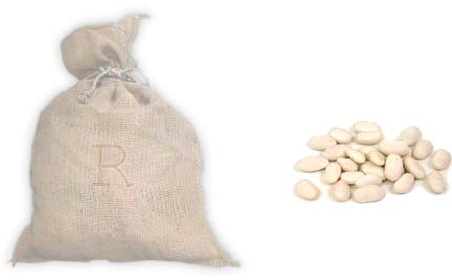

Computing the Mind

Modes of reasoning (compare with slides #14-#19 of Lecture 9.1) —
Class I trials — the exemplar set consists of one number from each concept.
Class II trials — four numbers, consistent with a simple rule.
Class III trials — four random numbers of similar magnitude.
Two groups of hypotheses used: (1) salient mathematical properties: odd, even, square, cube, and prime numbers, multiples and powers of small numbers, and sets of numbers ending in the same digit; (2) all intervals of consecutive numbers with endpoints between 1 and 100.
(given) Chimps are susceptible to the disease blicketitis.
(given) Squirrels are susceptible to the disease blicketitis.
(true or false?) Horses are susceptible to the disease blicketitis.
Right: the assumed representation of the structure of similarities among animals, based on similarity judgments made by subjects in a separate norming study. This is the basis for the HYPOTHESIS SPACE of the Bayesian model.

Correlations between the generalization scores of three models and of the human subjects, in three versions of the induction task (n indicates the number of premise examples).
Children learning names for object concepts routinely make strong generalizations from just a few examples. The same processes of rapid generalization can be studied in adults learning names for novel objects created with computer graphics.
Here, given these alien objects and three examples (boxed in red) of "tufas" (a word in the alien language), which other objects are tufas? Almost everyone selects just the objects boxed in gray.
How to Grow a Mind: Statistics, Structure, and Abstraction, J. B. Tenenbaum et al., Science 331:1279 (2011).
d — the observed data;
h — the hypothesis in question;
H — the space of all possible hypotheses (which may be
intricately structured).
How to Grow a Mind: Statistics, Structure, and Abstraction, J. B. Tenenbaum et al., Science 331:1279 (2011).
Learning names for categories can be modeled as Bayesian inference over a tree-structured domain representation. Objects are placed at the leaves of the tree; hypotheses about categories that words could label correspond to different nodes. Nodes at different depths pick out hypotheses at different levels of generality (e.g., Clydesdales, draft horses, horses, animals, or living things).
Priors [on category labels] favor higher-placed nodes and coherent categories.
Likelihoods [of images, given labels] assume that examples are drawn randomly from the node labeled by the word, favoring lower nodes that cover the examples tightly. (This captures the sense of suspicious coincidence: it would be very improbable — suspicious — for all examples of a word to cluster under the same lower branch of the tree if the word actually labels a high node.)
Posterior probabilities [of labels, given images] are computed by combining priors and likelihoods. The results favor generalizing across the lowest distinctive branch that spans all the observed examples (boxed in gray).
A search algorithm attempts to find both the form \(F\) (dictated by the abstract principles) and the structure \(S\) of that form that jointly maximize \(P(S,F\mid D)\), the posterior probability of the structure and form, given data \(D\). That posterior is a function of the product of \(P(D\mid S)\) and \(P(S\mid F)\).
In this example, the algorithm is given as data the features of animals; it then finds a tree structure with intuitively sensible categories at multiple scales.
[For examples of structures other than trees, see the next slide.]
How to Grow a Mind: Statistics, Structure, and Abstraction, J. B. Tenenbaum et al., Science 331:1279 (2011).
A search algorithm attempts to find both the form \(F\) (dictated by the abstract principles) and the structure \(S\) of that form that jointly maximize \(P(S,F\mid D)\), the posterior probability of the structure and form, given data \(D\). That posterior is a function of the product of \(P(D\mid S)\) and \(P(S\mid F)\).
| problem setting | form | |
| (A) | animal species taxonomy | tree |
| (B) | SCOTUS conservative/liberal | chain |
| (C) | color similarity | ring |
| (D) | latitude/longitude | ring \(\times\) chain |
| (E) | morphed face images, 2 parameters | chain \(\times\) chain |
How to Grow a Mind: Statistics, Structure, and Abstraction, J. B. Tenenbaum et al., Science 331:1279 (2011).
Hierarchical Bayesian Models defined over graph schemas can explain how intuitive theories are acquired and used to learn about specific causal relations from limited data.
(A) A medical reasoning domain described by relations among 16 variables: “diseases” (top row), with causal links to “symptoms” (bottom row). This network can also be visualized as a matrix (top right, links shown in black). The causal learning task is to reconstruct this network based on observing data on the states of these 16 variables in a set of patients.
(B) A two-level HBM formalizes bottom-up causal learning or learning with an uninformative prior on networks. The bottom level is the data matrix D. The second level (structure) encodes hypothesized causal networks: a grayscale matrix visualizes the posterior probability that each pairwise causal link exists, conditioned on observing n patients; compare this with the ground truth in (A). The true causal network can be recovered perfectly only from observing very many patients (n = 1000; not shown). With n = 80, spurious links (gray squares) are inferred, and with n = 20 almost none of the true structure is detected.
How to Grow a Mind: Statistics, Structure, and Abstraction, J. B. Tenenbaum et al., Science 331:1279 (2011).
A Hierarchical Bayesian model for learning an abstract theory of causality.
At the highest level are laws expressed in first-order logic representing the abstract properties of causal relationships, the role of exogenous interventions in defining the direction of causality, and features that may mark an event as an exogenous intervention. [The logical formulas in this example are meaningless and serve illustration purposes only.]
These laws place constraints on possible directed graphical models at the level below, which in turn are used to explain patterns of observed events over variables.
Given observed events from several different causal systems, each encoded in a distinct data matrix, and a hypothesis space of possible laws at the highest level, the model converges quickly on a correct theory of intervention-based causality and uses that theory to constrain inferences about the specific causal networks underlying the different systems at the level below.
How to Grow a Mind: Statistics, Structure, and Abstraction, J. B. Tenenbaum et al., Science 331:1279 (2011).
General intelligence
"In animals, intelligence is thought to involve an individual’s ability to acquire new knowledge from interactions with the physical or social environment, use this knowledge to organize effective behavior in both familiar and novel contexts, and engage with and solve novel problems."
Respect the mouse!
"Recent studies are consistent with the presence of general intelligence in mammals (rodents and primates)."
"In animals, intelligence is thought to involve an individual’s ability to acquire new knowledge from interactions with the physical or social environment, use this knowledge to organize effective behavior in both familiar and novel contexts, and ENGAGE WITH AND SOLVE NOVEL PROBLEMS."
general problems
↓
general intelligence
Last modified: Wed Mar 20 2024 at 18:38:20 EDT